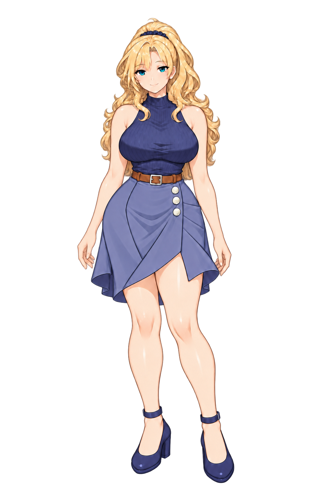

퇴근 후, 우리대화 · 선택지 · 메신저
기존 게임 입상과 원문을 사용한 UI 미리보기입니다. 게임의 저장·분기와는 연결되지 않습니다.

강리아
오늘 퇴근하고 시간 있어? 가 보고 싶은 곳이 하나 생겼어~
퇴근 후, 우리개인 메시지 · 일요일 아침
기존 게임 입상과 원문을 사용한 UI 미리보기입니다. 게임의 저장·분기와는 연결되지 않습니다.

오늘 퇴근하고 시간 있어? 가 보고 싶은 곳이 하나 생겼어~